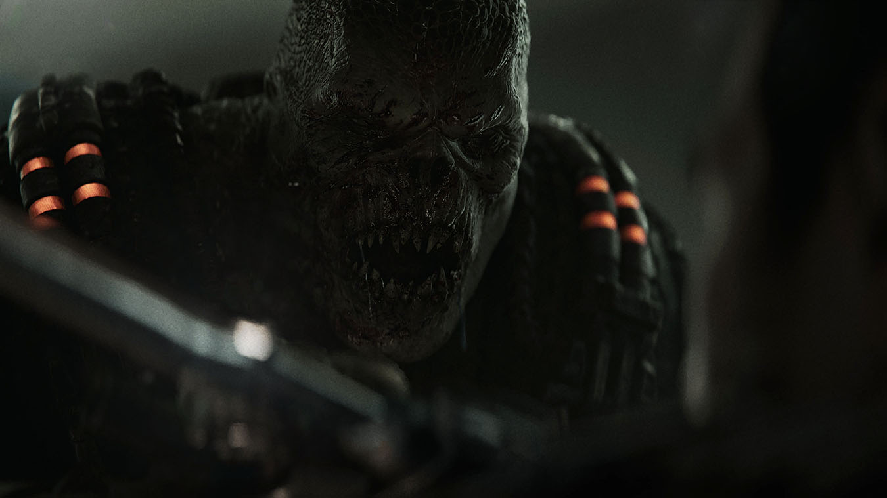
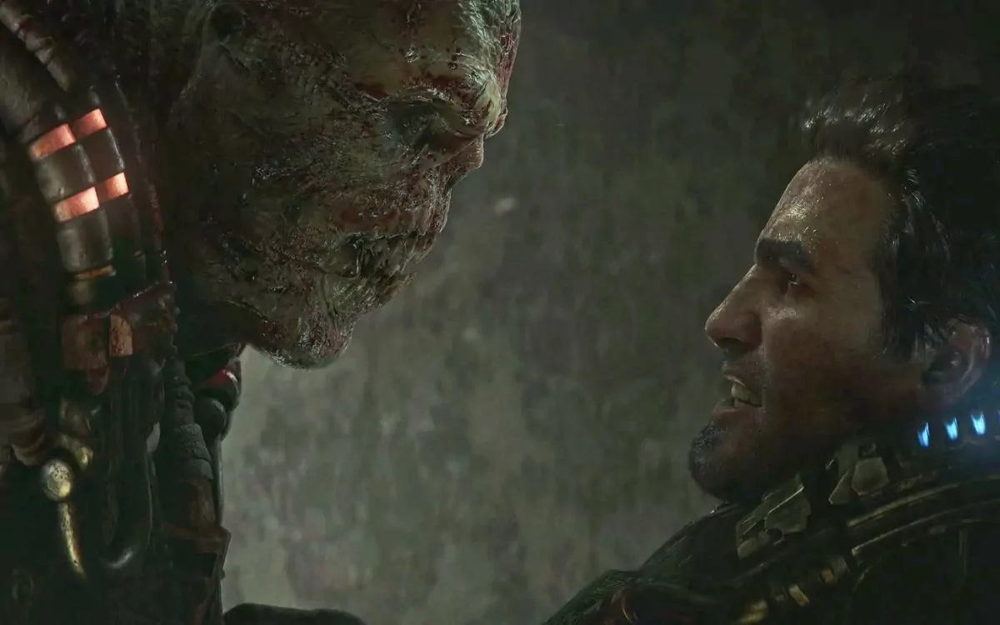
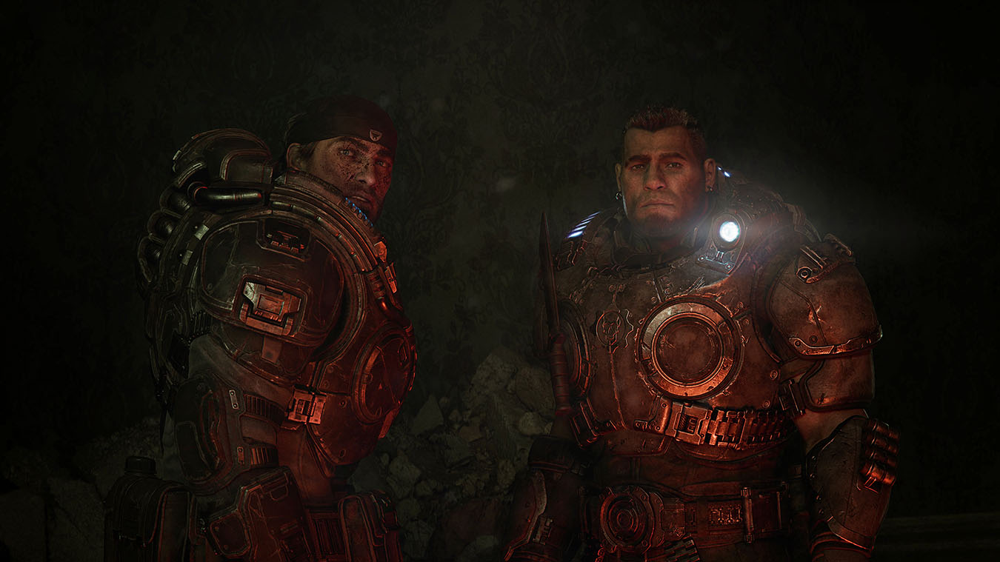
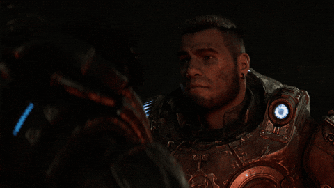

Gears E-Day
Voltar para Seleção do Game
 |
 |
 |
 |
Desenvolvedora: The Coalition
Plataforma: PS5, PC e Xbox Series S/X
Ano de Lançamento: 2026 (Previsto)
Sinopse: Situado 14 anos antes do primeiro jogo, Gears of War: E-Day narra os eventos catastróficos do "Dia da Emergência", o momento em que a Horda Locust surgiu do subsolo para aniquilar a humanidade.
A história foca na amizade e na sobrevivência de versões mais jovens de Marcus Fenix e Dominic Santiago. O jogo promete resgatar o tom de terror e desespero dos títulos originais, mostrando como soldados despreparados enfrentaram uma ameaça que nunca imaginaram existir, utilizando o poder da Unreal Engine 5 para criar um visual hiper-realista.